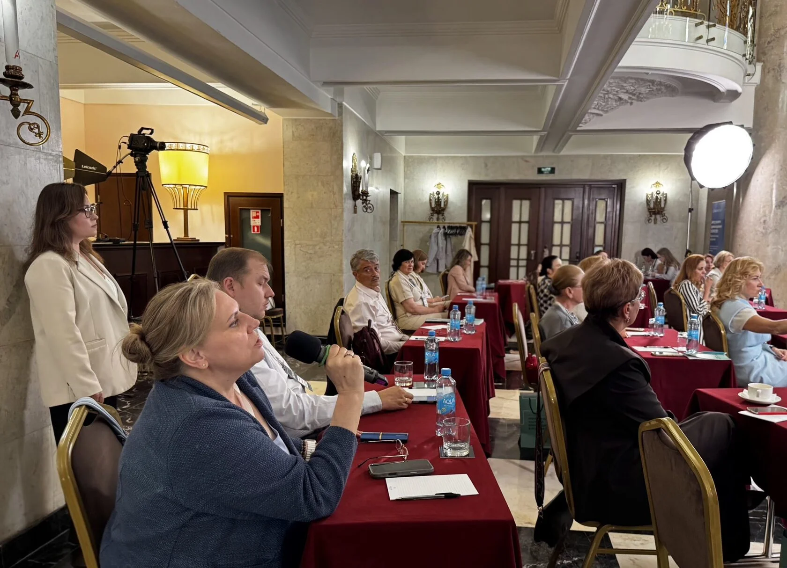
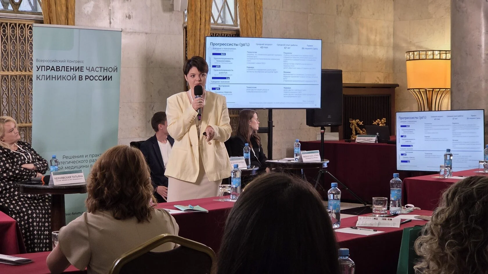
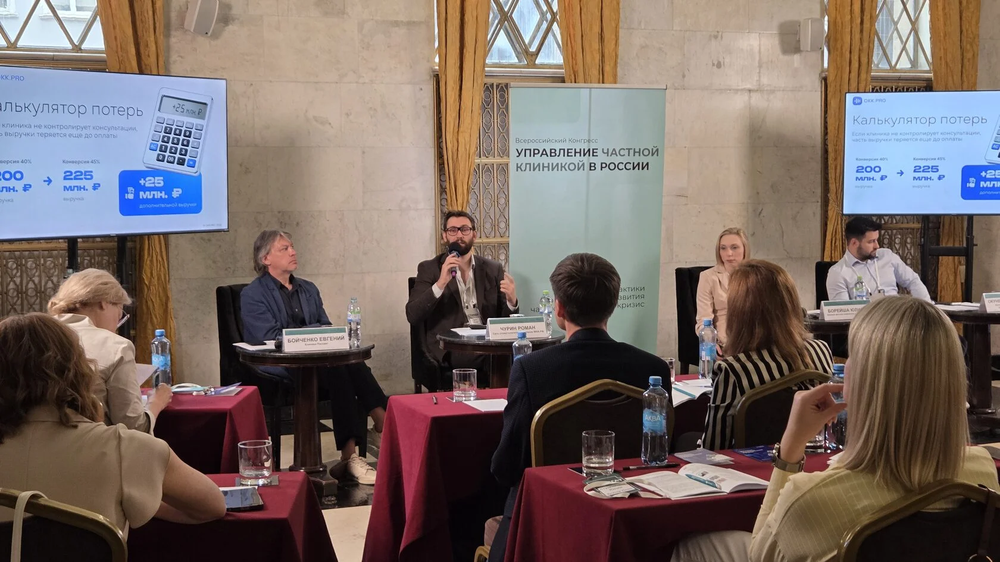
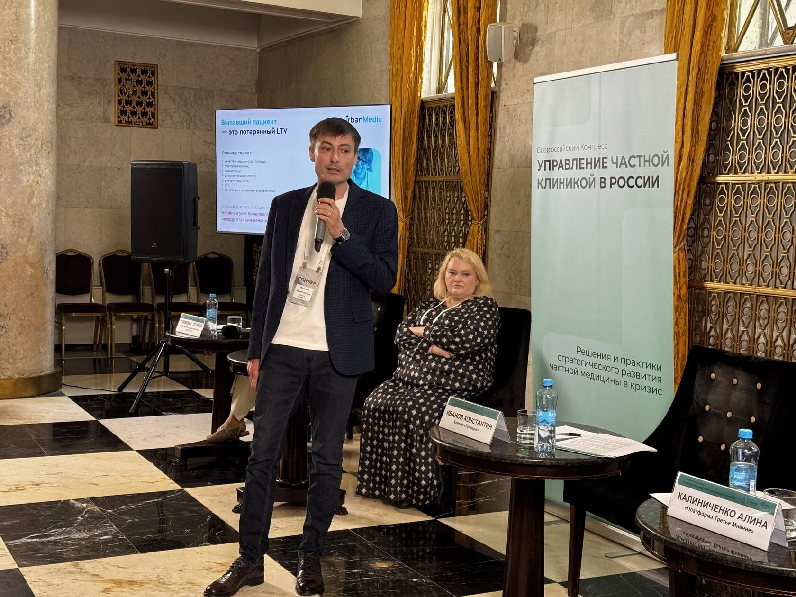
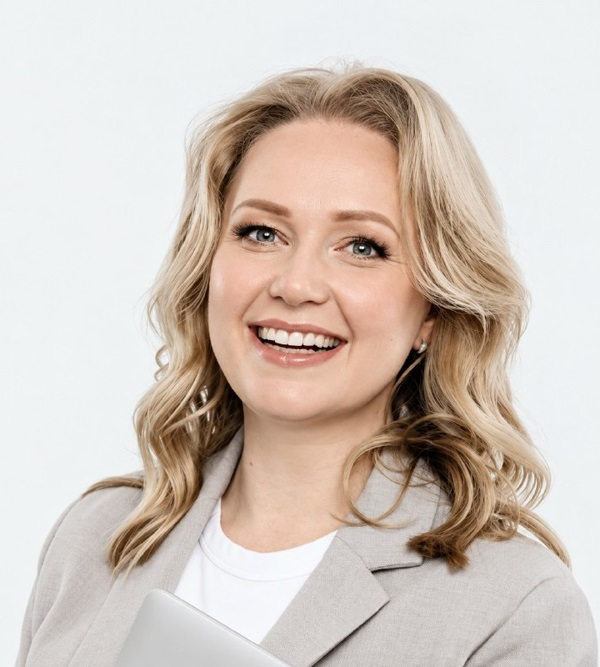
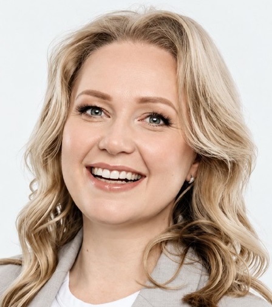

Стратегия роста прибыли на 2027
Вы узнаете, как выявить скрытые финансовые потери, повысить маржинальность медицинских услуг, оптимизировать расходы и выбрать окупаемые инвестиции
Встреча директоров частных клиник
Дата проведения
Место проведения
МоскваГостиница ЛенинградскаяСтратегии роста прибыли
для устойчивого развития бизнеса
О встрече
Закрытый формат встречи позволяет напрямую общаться с ведущими экспертами отрасли, задавать вопросы по актуальным задачам вашей клиники, получать практические рекомендации и обмениваться опытом с руководителями медицинского бизнеса
Вы узнаете, как выявить скрытые финансовые потери, повысить маржинальность медицинских услуг, оптимизировать расходы и выбрать окупаемые инвестиции
Вы разберёте ТОП-5 инструментов снижения стоимости привлечения пациентов и повышения их возвращаемости без увеличения рекламных расходов
Вы получите инструменты повышения производительности врачей, оптимизации их загрузки и построения эффективной системы KPI и мотивации
Вы сможете задать экспертам вопросы по управлению вашей клиникой, обсудить актуальные задачи и получить практические рекомендации





Для кого
Как адаптировать бизнес-модель клиники к новым условиям рынка и обеспечить устойчивый рост прибыли в 2027 году?
Как выявить слабые места в бизнес-процессах, устранить управленческие сбои и повысить эффективность подразделений?
Как выстроить систему менеджмента качества, обеспечивающую высокое качество медицинской помощи и эффективную работу врачей?
Как рассчитать себестоимость и маржинальность медицинских услуг, выявить прибыльные и убыточные направления?
Как повысить возвращаемость пациентов и выручку от существующей базы с помощью персонализированных коммуникаций?
Как сдерживать рост ФОТ, сохранять сильных специалистов и повышать производительность медицинской команды?
Главные темы
Разбор управленческих задач вашей клиники: задайте вопросы эксперту, обсудите свою ситуацию и получите практические рекомендации для принятия взвешенных решений.
Эксперты

Консультант, Eqiva. Эксперт по развитию системы маркетинга и сервиса региональных клиник

Операционный Директор, Клиника ЕМС

Сооснователь, Клиника Рассвет. Эксперт в медицинском маркетинге и коммуникациях
Медицинский директор, главный врач, Сеть клиник «Семейная». Врач-невролог, кандидат медицинских наук

Врач-кардиолог, к.м.н. Директор по развитию, Сеть клиник Балтмед (Санкт-Петербург). Бизнес-аналитик, СмартДельтаСистемс (Москва)
Программа
Регистрация. приветственный кофе
Задайте вопросы эксперту и получите развернутые ответы и рекомендации по темам, которые волнуют именно Вас!

Консультант, Eqiva. Эксперт по развитию системы маркетинга и сервиса региональных клиник. Экс-директор по маркетингу, Клиника «УГМК-здоровье» (г. Екатеринбург); экс-директор по маркетингу и продажам, Курорт «Первая линия» (г. Санкт-Петербург)
Перерыв
Разбор управленческих задач вашей клиники: задайте вопросы эксперту, обсудите свою ситуацию и получите практические рекомендации для принятия взвешенных решений.
Варианты тем для обсуждения:
Операционный Директор, Клиника ЕМС (Один из лидеров рейтинга Аналитического центра Vademecum «ТОП200 частных многопрофильных клиник России»)
Перерыв, кофе-пауза
Разбор управленческих задач вашей клиники: задайте вопросы эксперту, обсудите свою ситуацию и получите практические рекомендации для принятия взвешенных решений.
Варианты тем для обсуждения:
Сооснователь, Клиника Рассвет. Эксперт в медицинском маркетинге и коммуникациях. Преподаватель, Высшая школа организации и управления здравоохранением. Преподаватель и член экспертного совета программы EMBA, Высшая школа бизнеса МГУ
Обед
Разбор управленческих задач вашей клиники: задайте вопросы эксперту, обсудите свою ситуацию и получите практические рекомендации для принятия взвешенных решений.
Варианты тем для обсуждения:
Медицинский директор, главный врач, Сеть клиник «Семейная». Врач-невролог, кандидат медицинских наук
Перерыв, кофе-пауза
Разбор управленческих задач вашей клиники: задайте вопросы эксперту, обсудите свою ситуацию и получите практические рекомендации для принятия взвешенных решений.
Варианты тем для обсуждения:
Врач-кардиолог, к.м.н. Директор по развитию, Сеть клиник Балтмед (Санкт-Петербург). Бизнес-аналитик, СмартДельтаСистемс (Москва)
Вечерний коктейль. Свободное общение участников и спикеров
*Состав тем и спикеров может меняться. По вопросам участия: manager75@imperia-forums.ru | +7 (904) 552 74 98
Оставьте заявку, чтобы получить условия участия в клубной встрече.
Как это было
15-й Всероссийский конгресс «Управление частной клиникой в России»

Форум «Управление частной клиникой в России 2025»

Конгресс «Управление частной клиникой в России»

Конгресс «Управление частной клиникой в России»
Конгресс «Управление частной клиникой в России»
, Санкт-Петербург
Отзывы
Стоимость до 8 июня:
34 000Стоимость до 8 июня:
39 000Стоимость до 8 июня:
56 000Стоимость до 8 июня:
90 000Стоимость до 8 июня:
110 000